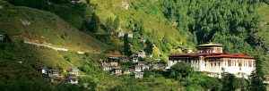

Querid@s am i g@s ,
Hace ya un año largo que nos vimos obligados a suspender nuestras actividades presenciales y ahora al fin parece que hay luz al final del túnel. Sin embargo seguiremos siendo prudentes y esperaremos a ver cómo se desarrolla la pandemia a lo largo de los meses de verano antes de reanudar nuestra actividad. Os mantendremos informados al respecto.
Mientras tanto, muchos me habéis preguntado por la situación en Bután , y me complace y enorgullece decir que la gestión de la pandemia en el país ha sido hasta la fecha digna de elogio y eficacia , hasta el punto de haber llamado la atención de la prensa de calidad internacional incluyendo la americana , la inglesa y la francesa entre otras. Una parte significante de este éxito se ha debido sin duda al liderazgo ejemplar de SM el Rey , que se ha involucrado desde el principio , así como las acertadas decisiones del gobierno encabezado por un Primer Ministro que precisamente es Doctor en Medicina. Además se establecieron protocolos que si bien parecían “duros” al principio(como por ejemplo establecer una cuarentena de 21 días en hoteles especialmente preparados para ello) luego resultaron ser muy eficaces contra la propagación del virus.
El país se prepara para recibir de nuevo al turismo en un futuro no lejano pero no debemos olvidar que Bután tiene como vecinos a la India y a Nepal, desde donde las noticias no han sido tan buenas.
Así que esperemos que pronto podamos reunirnos de nuevo para celebrar la vuelta a la normalidad.
Mientras tanto, os mando a todos un abrazo y mis mejores deseos para el futuro.
Tashi Delek!
Ian Triay
Presidente GNH Center Spain

